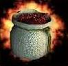

|  |
|
|
|
|
This item is found on level 5 or deeper, and is "Almost Never" found.
(Commonality value of 2)
This item can be dropped by:
Ruffian, Red Cloak Assassin, Slippery Mire, Jubilex, Winged Demon, Fiend, Fire Lord, Wisp, Efreet, Shadow Serpent, Drey Dragon, Havannan Lion, Rabid Snook, Stalker, Mordun Pandrun, Golden Eagle, Orp, Giant Wasp, Shuman Munsae, Vampire, Night Screamer, Vampire Lord, Kyu t'Salli, Dark Shape, Cyclops, Obsidian Golemn, Griffin, Gorgon, Life Shifter, Robber, Gredlan Footpad, Red-Cloaked Thief, Spell Binder, Wizard, Mage, Mind Twister, Swordsman, Nabutu, Gibbering Yethwa, T'Mana, T'Kovant,
Use your browser's BACK button to get back